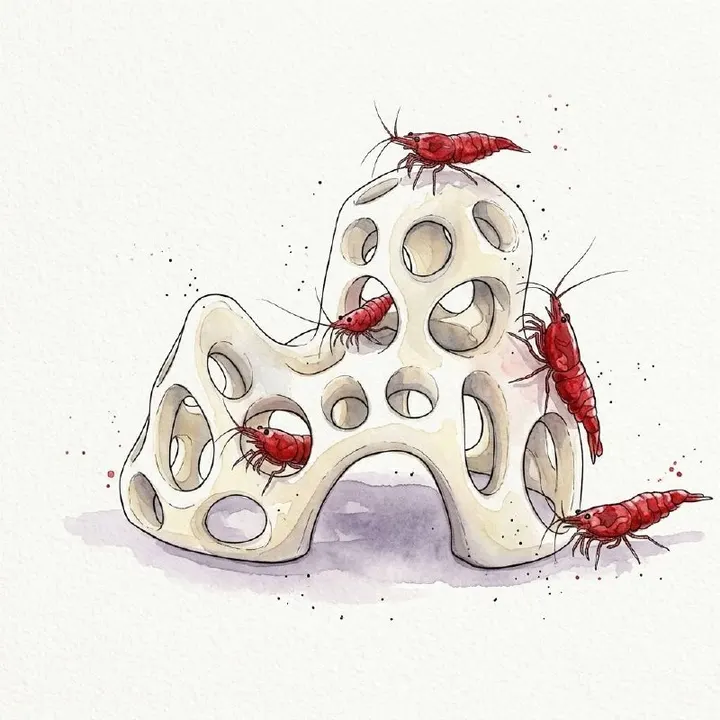

من مجموعة أكوا هافنAQUA HAVEN / THE COLLECTION
كهف ديكور مفرغ لأحواض الروبيان
مخبأ ديكوري عضوي متعدد القمم للروبيان والأسماك الصغيرة، بفتحات مفرغة توفر أماكن آمنة للاختباء وتساعد على تدفق الماء داخل الحوض.
٣٥ ر.س
متاح ضمن اللقطة المرجعية
مساحة للاكتشاف، قبل الاختيار.
واصل استكشاف المجموعة هذه معاينة للتصميم. الأسعار والخيارات والتوفر مرجعية وغير متزامنة؛ لا يمكن الطلب أو الدفع من هذه الصفحة.
A CLOSER LOOK
نظرة أقرب.
نبذة عن المنتج
Coral Hill مخبأ ديكوري عضوي متعدد القمم مستوحى من تضاريس أعماق البحر، ويضيف ارتفاعًا وحضورًا بصريًا مميزًا داخل الحوض. تصميمه المفرغ بفتحات متعددة يوفر أماكن آمنة لاختباء الروبيان والأسماك الصغيرة واستكشافها، بينما يمنح السطح المطفي والشكل الانسيابي مظهرًا عصريًا وأنيقًا.
المميزات
- تدفق ماء ممتاز: البنية المفتوحة والمسامية تساعد على مرور الماء بسهولة حول القطعة وداخلها.
- مخابئ متعددة: الفتحات الموزعة توفر مساحات مناسبة لاختباء الروبيان والأسماك الصغيرة.
- تصميم مرتفع متعدد القمم: يضيف بعدًا رأسيًا وحضورًا أقوى داخل تنسيق الحوض.
- مظهر عصري: تصميم عضوي بملمس مطفي يجمع بين الوظيفة والشكل الجمالي.
الاستخدام
يوضع داخل الحوض كمخبأ وقطعة ديكورية للروبيان والأسماك الصغيرة، ويمكن استخدامه منفردًا أو دمجه مع ديكورات أخرى ضمن تنسيق الحوض.